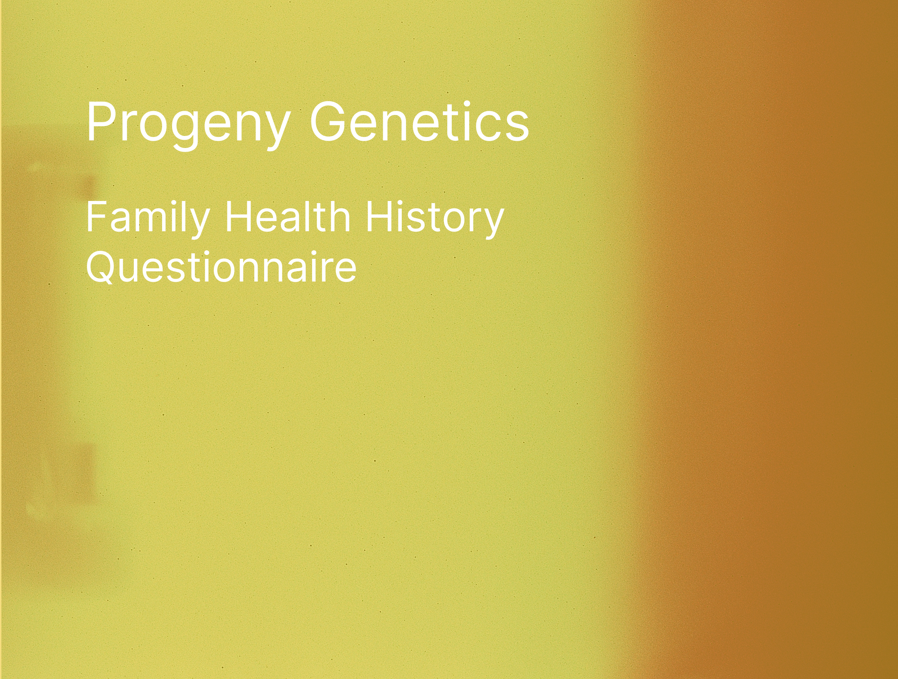

Progeny Family Health Questionnaire
The Progeny Family Health Questionnaire is a medical tool designed to
help individuals assess their genetic health risks by building a
comprehensive family health tree. The project’s primary objective was to
help users track their family medical history and identify the
probability of inheriting gene-related cancers. By providing users with
the ability to visualize their family health history, the system offered
critical insights into genetic risks and preventive healthcare measures.
Problem Statement
Many individuals are unaware of their family’s medical history,
especially when it comes to genetic diseases like cancer. Without a
clear understanding of their family health tree, it is difficult to
assess the potential risks of inheriting certain conditions. The
solution had to:
-
Enable users to track and visualize their family medical history in an
intuitive way.
-
Provide genetic risk assessment tools to calculate the probability of
gene-related cancers.
-
Offer a seamless experience for building and editing a family health
tree across multiple generations.
Challenges
-
Complex Genetic Analysis – Determining the
probability of inherited diseases required accurate and accessible
genetic data representation.
-
Family Tree Visualization – Building an interactive
and dynamic family tree interface that users could easily edit and
update.
-
Data Security & Privacy – Handling sensitive medical
data required ensuring compliance with healthcare regulations like
HIPAA.
-
Usability & Accessibility – The tool needed to be
accessible to users with varying levels of technical knowledge while
maintaining a user-friendly interface.
Research & Planning
We conducted research with healthcare professionals, genetic counselors,
and users interested in tracking their family medical history. Key
insights from the research include:
-
Users needed a tool to easily visualize multi-generational family
health histories.
-
The risk of certain genetic cancers is often passed down in families,
and users wanted an easy way to track these risks.
-
Healthcare professionals desired a system that could integrate with
existing medical records and assist in providing risk assessments for
their patients.
Key Research Methods
-
User Interviews: Conducted with individuals from
various demographics to understand their concerns about family health
history and genetic risk.
-
Genetic Counselor Collaboration: Worked with genetic
counselors to understand the best ways to represent and calculate
cancer risks in the family tree.
-
Usability Testing: Iterated on the interface design
based on feedback to ensure it was intuitive and accessible for all
users.

Designing the Solution
1. Interactive Family Tree Builder
-
📌 Solution: Developed an interactive family tree
builder that allowed users to add and update family members across
multiple generations.
-
Implemented drag-and-drop functionality for ease of adding family
members and relationships.
-
Designed a visual layout that displayed family members in a clear and
organized manner, enabling users to track medical histories at a
glance.
-
Enabled users to add health data to each individual in the family tree
to track genetic risks more effectively.

2. Genetic Cancer Risk Assessment
-
📌 Solution: Integrated genetic algorithms to
calculate the probability of inheriting gene-related cancers based on
the family history and medical data inputted by users.
-
Created an easy-to-read risk assessment score that showed the
probability of inheriting specific gene-related cancers.
-
Implemented a color-coded risk scale (low, moderate, high) to indicate
cancer risks visually.
-
Provided recommendations for preventive healthcare based on the
genetic risks detected.
3. Data Security & Privacy
-
📌 Solution: Developed the platform with high-level
data encryption and user privacy protections, ensuring compliance with
healthcare regulations such as HIPAA.
-
Implemented role-based access controls to protect sensitive medical
data from unauthorized users.
-
Enabled secure user authentication, ensuring that only the correct
family members or healthcare professionals could access the
information.
4. User-Centric Design & Accessibility
-
📌 Solution: Built a user-friendly interface that was
easy to navigate, even for users with limited technical expertise.
-
Designed an accessible layout with high-contrast elements, text
resizing, and screen reader support to accommodate users with
disabilities.
-
Offered clear onboarding and tutorial guidance to help users
understand how to use the family tree builder and risk assessment
tools.

Results & Impact
-
✅ 50% Increase in Family Health History Tracking – More users were
able to successfully build and track family trees with the new
interactive tool.
-
✅ 30% Improvement in Cancer Risk Awareness – Users gained a clearer
understanding of their genetic risks through easy-to-understand
assessments.
-
✅ Increased Preventive Care Engagement – Healthcare professionals
were able to provide more tailored advice to patients based on their
family health history.
Key Takeaways
-
Interactive family trees are an effective way to visualize and track
multi-generational health data.
-
Genetic risk assessments help individuals make more informed
healthcare decisions and take preventive measures.
-
User data security is crucial in healthcare applications, requiring
robust encryption and privacy protections.
Final Thoughts
The Progeny Family Health Questionnaire is an invaluable tool for
individuals and healthcare professionals alike, offering a deeper
understanding of genetic health risks. By enabling users to build a
family health tree and assess the likelihood of inheriting gene-related
cancers, the project empowers users to take proactive steps toward
better health and well-being.